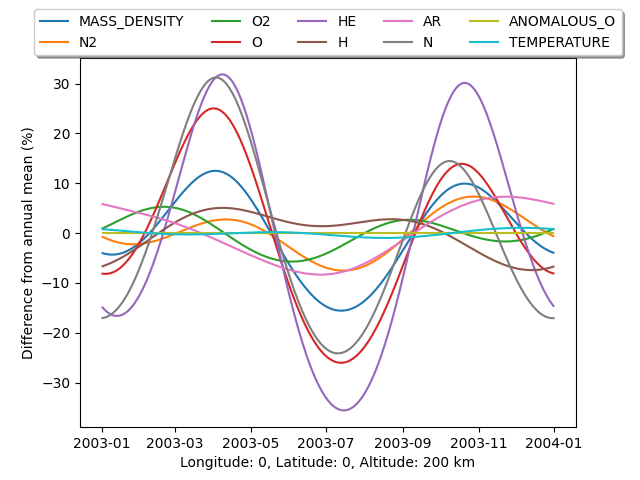

Note
Click here to download the full example code
Annual variation#
This example demonstrates how to calculate the difference from the annual mean at a single location.
import matplotlib.pyplot as plt
import numpy as np
from pymsis import msis
lon = 0
lat = 0
alt = 200
f107 = 150
f107a = 150
ap = 7
# One years worth of data at the 12th hour every day
dates = np.arange("2003-01", "2004-01", dtype="datetime64[D]") + np.timedelta64(12, "h")
ndates = len(dates)
# (F107, F107a, ap) all need to be specified at the same length as dates
f107s = [f107] * ndates
f107as = [f107a] * ndates
aps = [[ap] * 7] * ndates
output = msis.run(dates, lon, lat, alt, f107s, f107as, aps)
# output is now of the shape (ndates, 1, 1, 1, 11)
# Get rid of the single dimensions
output = np.squeeze(output)
# Lets get the percent variation from the annual mean for each variable
variation = 100 * (output / output.mean(axis=0) - 1)
variables = [
"Total mass density",
"N2",
"O2",
"O",
"He",
"H",
"Ar",
"N",
"Anomalous O",
"NO",
"Temperature",
]
_, ax = plt.subplots()
for i, label in enumerate(variables):
if label == "NO":
# There is currently no NO data
continue
ax.plot(dates, variation[:, i], label=label)
ax.legend(
loc="upper center", bbox_to_anchor=(0.5, 1.15), fancybox=True, shadow=True, ncol=5
)
ax.set_xlabel(f"Longitude: {lon}, Latitude: {lat}, Altitude: {alt} km")
ax.set_ylabel("Difference from annual mean (%)")
plt.show()
Total running time of the script: ( 0 minutes 0.118 seconds)